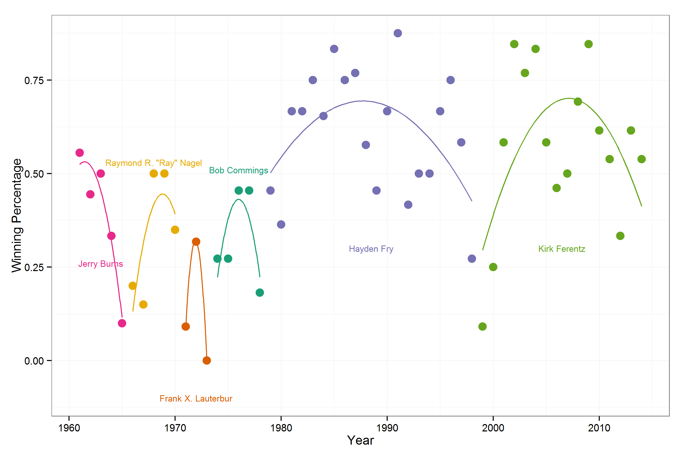
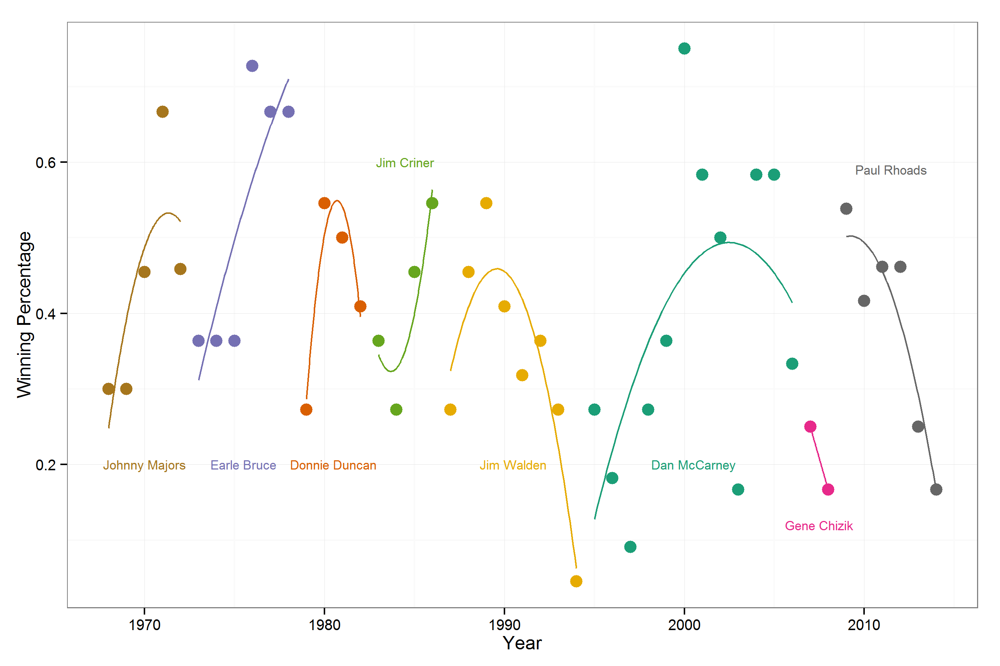
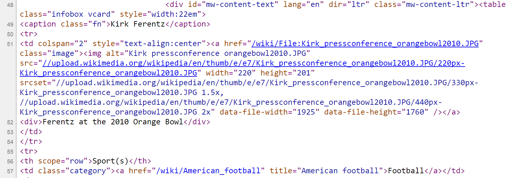
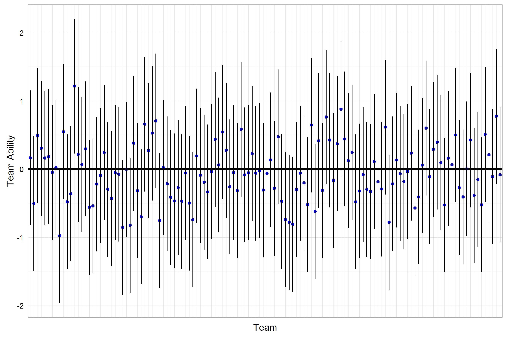

2015-12-04
## Year Team Win Loss Tie Pct PF PA Delta coach
## 1 2010 Iowa 8 5 0 0.61538 376 221 155 Kirk Ferentz
## 2 2011 Iowa 7 6 0 0.53846 358 310 48 Kirk Ferentz
## 3 2012 Iowa 4 8 0 0.33333 232 275 -43 Kirk Ferentz
## 4 2013 Iowa 8 5 0 0.61538 342 246 96 Kirk Ferentz
## 5 2014 Iowa 7 6 0 0.53846 367 333 34 Kirk Ferentz## Team Official Year Date WL Opponent PF PA
## 1 Iowa University of Iowa 2014 8/30/2014 W Northern Iowa 31 23
## 2 Iowa University of Iowa 2014 9/6/2014 W Ball St. (IN) 17 13
## 3 Iowa University of Iowa 2014 9/13/2014 L Iowa St. 17 20
## 4 Iowa University of Iowa 2014 9/20/2014 W Pittsburgh (PA) 24 20
## 5 Iowa University of Iowa 2014 9/27/2014 W Purdue (IN) 24 10
## 6 Iowa University of Iowa 2014 10/11/2014 W Indiana 45 29
## 7 Iowa University of Iowa 2014 10/18/2014 L Maryland 31 38
## 8 Iowa University of Iowa 2014 11/1/2014 W Northwestern (IL) 48 7
## 9 Iowa University of Iowa 2014 11/8/2014 L Minnesota 14 51
## 10 Iowa University of Iowa 2014 11/15/2014 W Illinois 30 14
## 11 Iowa University of Iowa 2014 11/22/2014 L Wisconsin 24 26
## 12 Iowa University of Iowa 2014 11/28/2014 L Nebraska 34 37
## 13 Iowa University of Iowa 2014 1/2/2015 L Tennessee 28 45
## Location
## 1 Iowa City, IA
## 2 Iowa City, IA
## 3 Iowa City, IA
## 4 Pittsburgh, PA
## 5 West Lafayette, IN
## 6 Iowa City, IA
## 7 College Park, MD
## 8 Iowa City, IA
## 9 Minneapolis, MN
## 10 Champaign, IL
## 11 Iowa City, IA
## 12 Iowa City, IA
## 13 Jacksonville, FL

<table>) and end tags (e.g. <⁄table>)
<h1> - <h6>
<b> <i>
<a href="http://www.google.com">
<table>
<p>
<ul> & <li>
<div>
<img>

beautiful soup: http://www.crummy.com/software/BeautifulSoup/SelectorGadget: http://selectorgadget.com/read_html is the most basic functionhtml_node or html_nodes
## {xml_nodeset (6)}
## [1] <td colspan="2" style="text-align:center"><a href="/wiki/File:Kirk_p ...
## [2] <th scope="row">Sport(s)</th>
## [3] <td class="category">\n <a href="/wiki/American_football" title="Am ...
## [4] <th colspan="2" style="text-align:center;background-color: lightgray ...
## [5] <th scope="row">Title</th>
## [6] <td>\n <a href="/wiki/Head_coach" title="Head coach">Head coach</a> ...html_text function## [1] "\nFerentz at the 2010 Orange Bowl\n"
## [2] "Sport(s)"
## [3] "Football"
## [4] "Current position"
## [5] "Title"
## [6] "Head coach"guess_encodingrepair_encoding: fix encoding problems## encoding language confidence
## 1 UTF-8 1.00
## 2 windows-1252 en 0.36
## 3 windows-1250 ro 0.18
## 4 windows-1254 tr 0.13
## 5 UTF-16BE 0.10
## 6 UTF-16LE 0.10html_name function## [1] "td" "th" "td" "th" "th" "td"html_attrs function## [[1]]
## colspan style
## "2" "text-align:center"
##
## [[2]]
## scope
## "row"
##
## [[3]]
## class
## "category"
##
## [[4]]
## colspan
## "2"
## style
## "text-align:center;background-color: lightgray;"
##
## [[5]]
## scope
## "row"
##
## [[6]]
## named character(0)html_attrs function again## [1] "/wiki/File:Kirk_pressconference_orangebowl2010.JPG"
## [2] "/wiki/American_football"
## [3] "/wiki/Head_coach"
## [4] "/wiki/Iowa_Hawkeyes_football"
## [5] "/wiki/Big_Ten_Conference"
## [6] "/wiki/Iowa_City,_Iowa"paste0 function is helpful for this## [1] "https://www.wikipedia.org/wiki/File:Kirk_pressconference_orangebowl2010.JPG"
## [2] "https://www.wikipedia.org/wiki/American_football"
## [3] "https://www.wikipedia.org/wiki/Head_coach"
## [4] "https://www.wikipedia.org/wiki/Iowa_Hawkeyes_football"
## [5] "https://www.wikipedia.org/wiki/Big_Ten_Conference"
## [6] "https://www.wikipedia.org/wiki/Iowa_City,_Iowa"html_table function is useful to scrape well formatted tablesglmer in the lme4 package